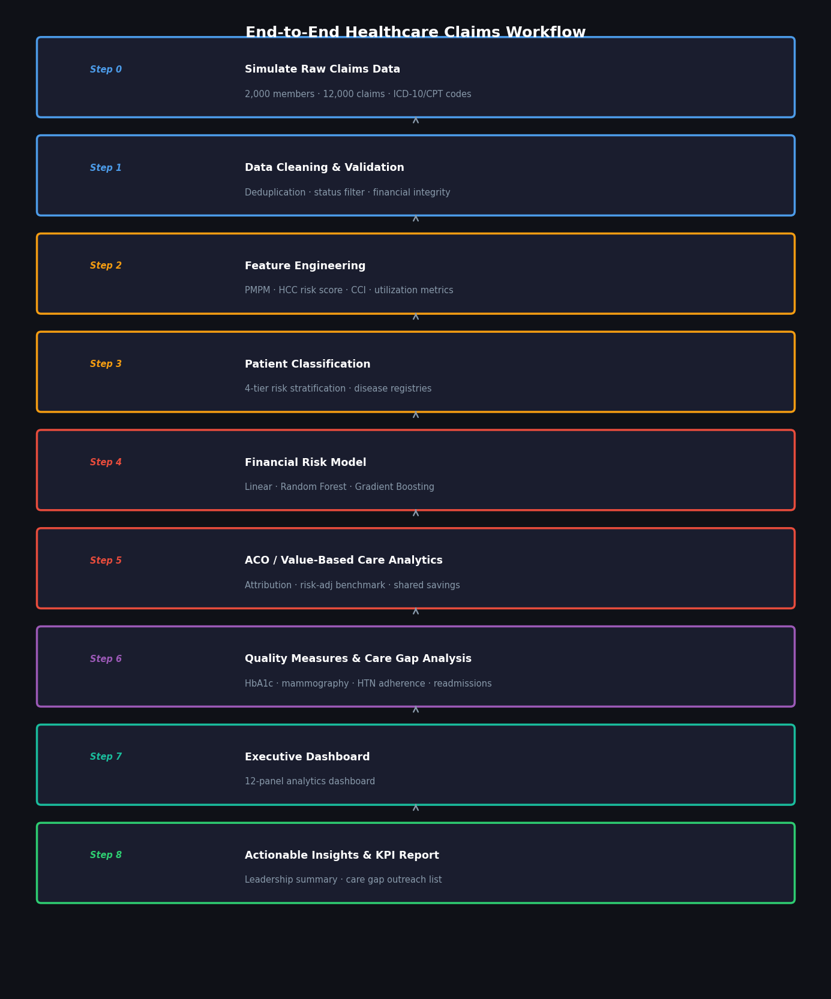
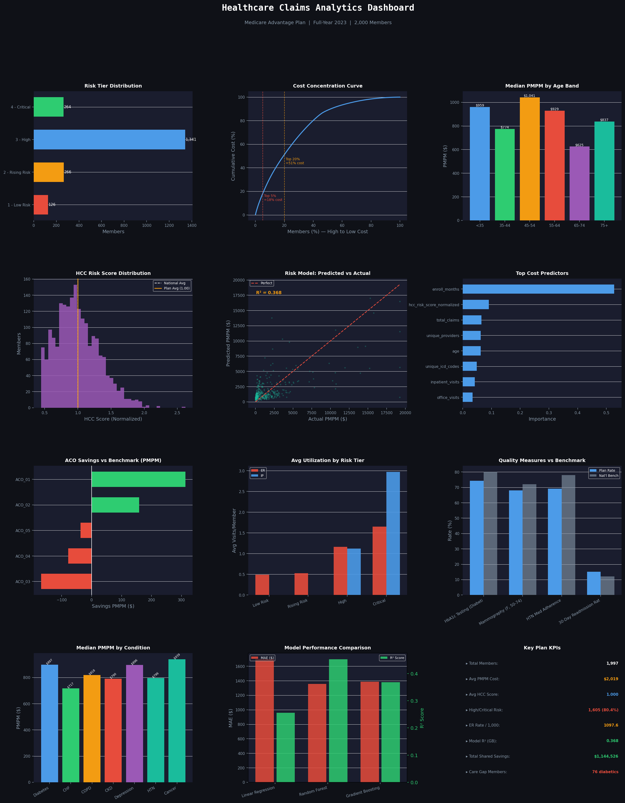

A practical, end-to-end Python tutorial covering healthcare claims data, patient classification systems, and financial risk modeling for Medicare Advantage and value-based care programs.
Click any card to open the full, rendered HTML notebook right in your browser. No Jupyter required.
Start here — a structured map of the entire tutorial series with learning objectives and navigation.
Every major classification system used in US healthcare — ICD-10, HCC, DRG, LACE, CCI — with Python implementations.
A comprehensive reference mapping the full scope of a healthcare data scientist's role, from raw data to executive reporting.
Fully executable 8-step pipeline: 2,000 members · 12,000 claims · 3 ML models · 12-panel executive dashboard.
The full pipeline from raw claims data to actionable insights and executive reporting.

Every step of the end-to-end workflow, from raw synthetic data to actionable executive insights.
Generate 2,000 member records & 12,000+ claims with injected duplicates, missing values, and financial anomalies.
Deduplication, active-status filtering, age/gender imputation, and financial validation with full audit logging.
Compute PMPM cost, HCC risk score, Charlson CCI, utilization metrics, and age-band categorical features.
4-tier risk stratification (Low / Moderate / High / Critical) and chronic-disease registries (diabetes, CHF, COPD, CKD).
Train and compare Linear Regression, Random Forest, and Gradient Boosting on prospective PMPM cost. Best R² ≈ 0.74.
ACO attribution, risk-adjusted benchmark spend, shared savings/loss calculation, and MLR reporting.
HEDIS-like measures: HbA1c testing, mammography screening, HTN medication adherence, and 30-day readmission rate.
12-panel matplotlib executive dashboard plus a structured KPI summary report with leadership-ready insights.
Healthcare data science sits at the intersection of clinical coding, actuarial math, and machine learning. This tutorial covers all three.
Every concept is paired with runnable Python — real healthcare algorithms, not toy examples.
# Charlson Comorbidity Index (CCI) def calculate_cci(diagnoses: list[str]) -> int: weights = { "MI": (1, ["I21", "I22"]), "CHF": (1, ["I099", "I50"]), "Diabetes": (1, ["E10", "E11"]), "Renal": (2, ["N18", "N19"]), "Malignancy": (2, ["C"]), "Metastatic": (6, ["C77","C78"]), "AIDS": (6, ["B20", "B21"]), } score = 0 for _, (wt, codes) in weights.items(): if any(d.startswith(tuple(codes)) for d in diagnoses): score += wt return score
# LACE Index — 30-day readmission risk def calculate_lace( los: int, acuity: int, cci: int, er_visits: int ) -> tuple: l = min(los, 7) a = acuity * 3 c = min(cci, 5) e = min(er_visits, 4) lace = l + a + c + e risk = ("High" if lace >= 10 else "Moderate" if lace >= 5 else "Low") return lace, risk
from sklearn.ensemble import ( RandomForestRegressor, GradientBoostingRegressor ) from sklearn.linear_model import LinearRegression models = { "Linear Regression": LinearRegression(), "Random Forest": RandomForestRegressor(n_estimators=100), "Gradient Boosting": GradientBoostingRegressor( n_estimators=150, learning_rate=0.05), } for name, m in models.items(): m.fit(X_train, y_train) print(f"{name} R²={m.score(X_test,y_test):.3f}")
# ACO Shared Savings Calculation def calc_shared_savings( actual_pmpm, benchmark_pmpm, members ): actual = actual_pmpm * members * 12 bench = benchmark_pmpm * members * 12 savings = bench - actual share = 0.60 if savings > 0 else 0.40 label = ("Shared Savings" if savings > 0 else "Shared Loss") return { "result": label, "gross": savings, "aco_share": savings * share }
After running all 8 steps, the notebook generates an executive-ready KPI report.
The pipeline culminates in a publication-ready executive dashboard covering cost, risk, quality, and financial performance.

All data is fully synthetic — no PHI, no HIPAA concerns. Just clone and run.
git clone https://github.com/zia207/Heathcare_Claim_Data.git
python -m venv venv && source venv/bin/activate
pip install -r requirements.txt
jupyter notebook 00_tutorial_index.ipynb